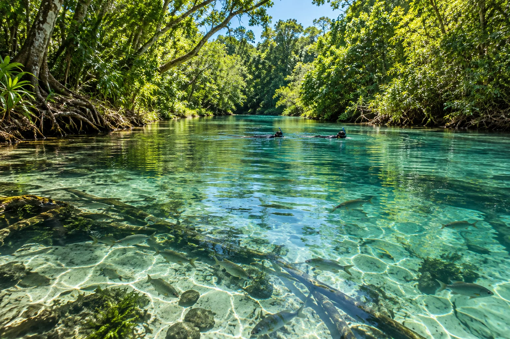

Rio da Prata
Bonito, Brésil · snorkeling

Rivière d’eau douce d’une transparence incroyable, où l’on dérive au milieu des poissons. Une expérience unique au monde.
- Lieu
- Bonito, Brésil
- Niveau
- Débutant
- Activités
- snorkeling
- Type d'eau
- inland
- Coordonnées
- -21.44, -56.44 (position approximative du secteur)
Dangers à connaître
- Crème solaire interdite.
- Ne touche pas le fond.
Le conseil d'Ocean Buddy
Les visites sont encadrées et limitées : réserve à l’avance.
Ouvrir dans Ocean Buddy Télécharger sur l'App Store
Source : Fiche Ocean Buddy · septembre 2026 · à vérifier localement.